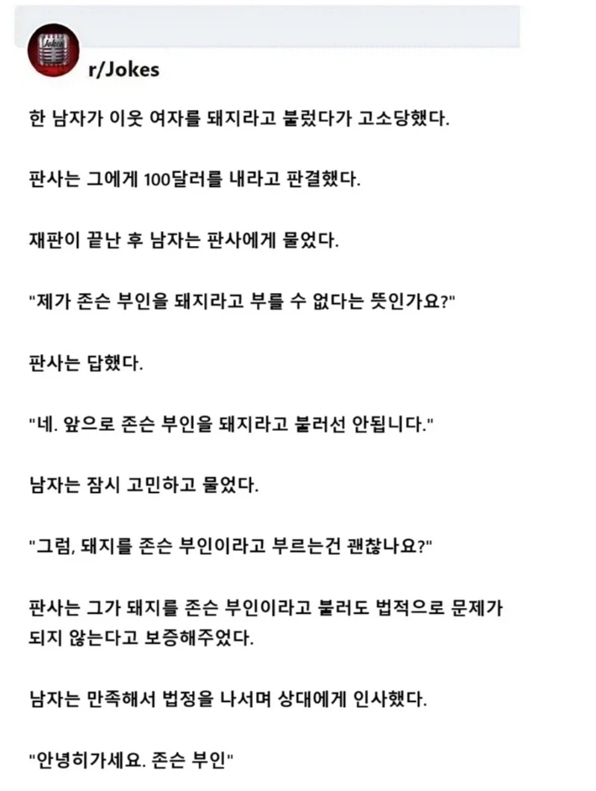

48 · 13 · 26 분 전 · 원문

수집 당시 댓글 13개
도로로로롱 · 1 시간 전
얼마나 돼지길래 ㅋㅋㅋㅋ
↳ 답글 · 오이쉬 · 24 분 전
얼마나 돼지인지 알고싶다면 고개를 들어 월마트를 보시오
톱밥님 · 1 시간 전
ㅋㅋㅋ재대로먹였네 ㅋㅋㅋㅋㅋ
삼성전자곱버스 · 35 분 전
zㅋㅋㅋㅋㅋㅋㅋㅋㅋㅋ
신념 · 35 분 전
파랑1 · 30 분 전
Mojom · 30 분 전
이런거 ㅈㄴ 웃김
보듬어주는사회 · 29 분 전
보증 한다잖아요!
Entfremdung · 29 분 전
"100달러를 내면 존슨 부인을 돼지라고 불러도 되는건가요?""물론입니다, 존슨 부인."
필립스 · 26 분 전
판사의 보증. 이게 크거든요~
피릉피릉 · 20 분 전
ㅋㅋㅋㅋㅋㅋㅋㅋㅋㅋㅋㅋㅋ
컴빌런 · 14 분 전
외국도 사실적시 고소가 되는구나
애니브리띵 · 12 분 전
가불기


얼마나 돼지길래 ㅋㅋㅋㅋ